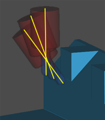

Inspect the tool path visually
-
In the Operation Navigator, right-click FIXED_CONTOUR and choose Tool Path→Verify.
-
On the 2D Dynamic tab, move the Animation Speed slider to 1.
-
Click Play
 .
.
-
In the No Blank message box, click OK.
-
In the Blank Geometry dialog box, in the Type group, from the list, select Offset from Part.
-
In the Offset group, in the Offset input box, type .000.
-
Click OK.

Notice how the tool axis tilts away from the part to avoid collisions.
-
Click OK.
NX replaces the colliding 3-axis motions with 5-axis motions to avoid the collision.
Because there are no collisions, the List button is unavailable.
Note
If you regenerate the operation in which NX tilted the tool path, the tilted tool path is not maintained, and the tool path reverts to being a 3-axis tool path.
-
Close the part.